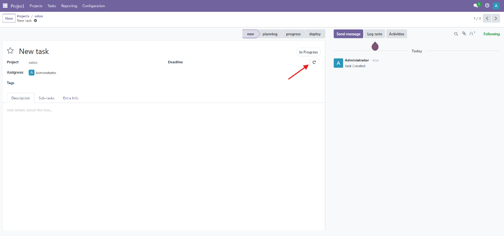
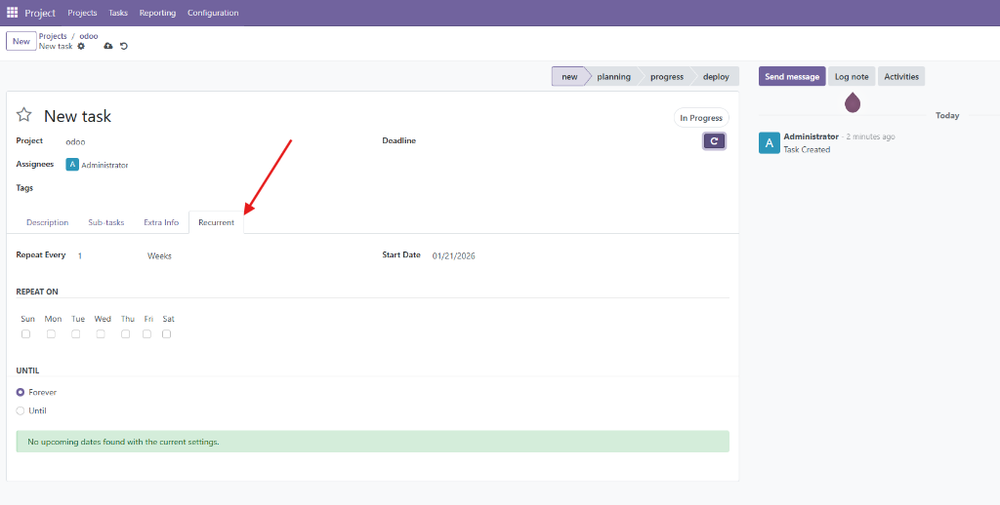
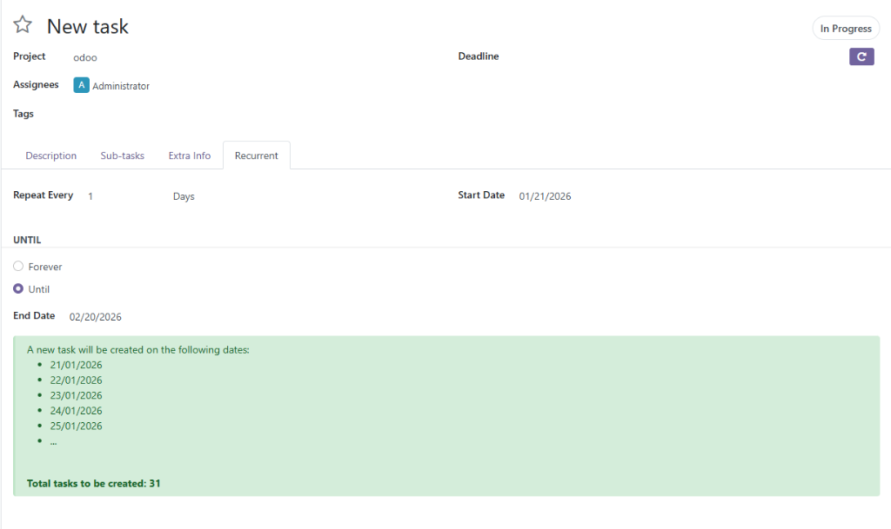
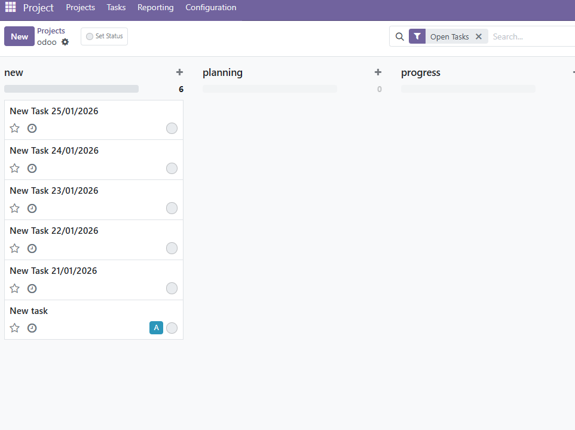

Boost Flexibility

Project Recurring Tasks
Automate your workflow by creating recurring tasks with flexible schedules. Preview upcoming task dates and ensure nothing falls through the cracks.
How to Use

1. Enable Recurrence
Open any task and look for the refresh icon in the task header. Click this button to enable recurrence features for the task.

2. Configure Schedule
Once enabled, a new Recurrent tab will appear. Here you can configure the repetition interval (Daily, Weekly, Monthly, Yearly), start dates, and end conditions.

3. Preview Dates
The system automatically calculates and displays a preview of the next upcoming task dates based on your configuration. For example, here is a daily schedule showing the next set of tasks to be created.

4. Generated Tasks
Tasks are automatically generated. Here you can see the 5 new daily tasks created in the Kanban view.